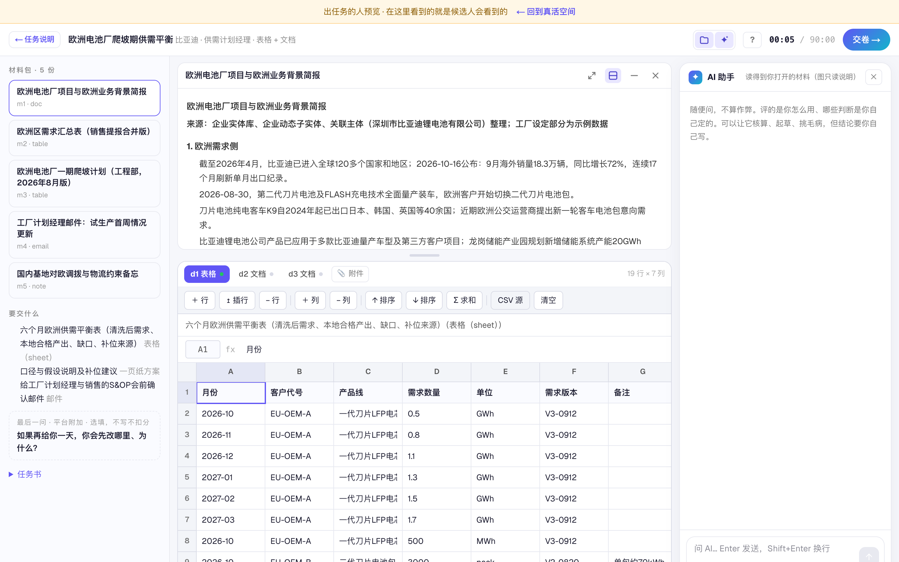

做题页上平台附加的内容都标出来了；AI 助手说清楚自己读得到什么；表格、图片、PDF、压缩包、视频的处理都顺了。
「最后一问」是平台附加的选填题，不写不扣分。右边 AI 助手读得到你打开的材料，图片读的是看图说明；问到说明里没有的画面细节，它会直说看不到。

交付要求里写了每条要哪些字段（比如「页面 / 截图编号 / 观察到了什么 / 严重度……」），空表格会按这些字段铺好表头。
长截图在框里滚动看，点「新窗口看原图」看大图；PDF 材料按页保留换行，不再挤成一段。
交卷时 zip 会解开，里面的文档、表格、PDF、图片逐个读给评分；视频、录音原样保存给出任务的人看，不参与评分（项目方要候选人另交介绍视频的，在自己的页面上说明要求即可）。
交卷被拦下（比如交付说明太短）改完再点，旧提示会收起，只显示这一次的提示，比如「先点开始记录屏幕」。